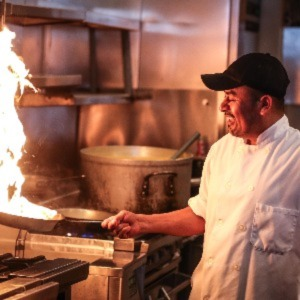

Our Story
Open: 10AM - Midnight
7 Days a Week
Call: 510- 548 - 4860
Menu
Catering
Photos
Location
Testimonials
Contact
Come in or call in today to experience the best Italian food Berkeley has to offer at a reasonable price!
Voted “Best of Berkeley” for Best Italian Food, Gypsy’s Trattoria Italiana offers gourmet Italian food in fast food style!
Each place can be customized by our customers since nothing is pre-made. Everything is made from scratch in the restaurant on a daily basis, including base sauces, stocks, and meatballs.
Prices are low and afforable, ranging from $8.74 to $12.74.
